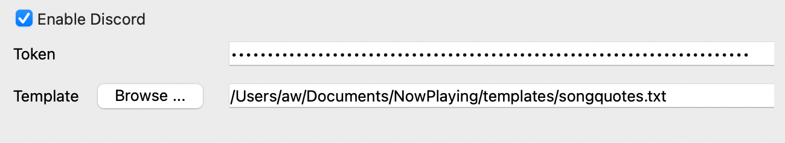

Discord¶
What’s Now Playing’s support of Discord is very preliminary at the moment. It supports two modes of operation, both of which may be done simultaneously:
Bot Mode: Using a token, update the presence of a bot account that includes a link to your stream if Twitch is also configured.
Client Mode: If the Discord app is running and a Client ID is provided, update the Discord user’s status to the playing song.
Configuration¶
{kind=link}
Generic Settings¶
In order to even start with Discord mode, it must be enabled
The template selected here is what will be used to fill in the status text.
Client Mode¶
If the Discord app is not running, start it first.
Go to your Discord Developers page
Create an application
After naming, take the Client ID and put into What’s Now Playing’s Discord page.
Restart What’s Now Playing. Subsequent launches will connect to Discord as long as the Discord app is already running.
Bot Mode¶
Go to your Discord Developers page
Create an application
Build-a-bot
Make a note of the token from the bot page
Invite your bot to your Discord channel
Put that token into the Discord settings
Restart What’s Now Playing. Subsequent launches will connect to Discord as long as the Discord app is already running.